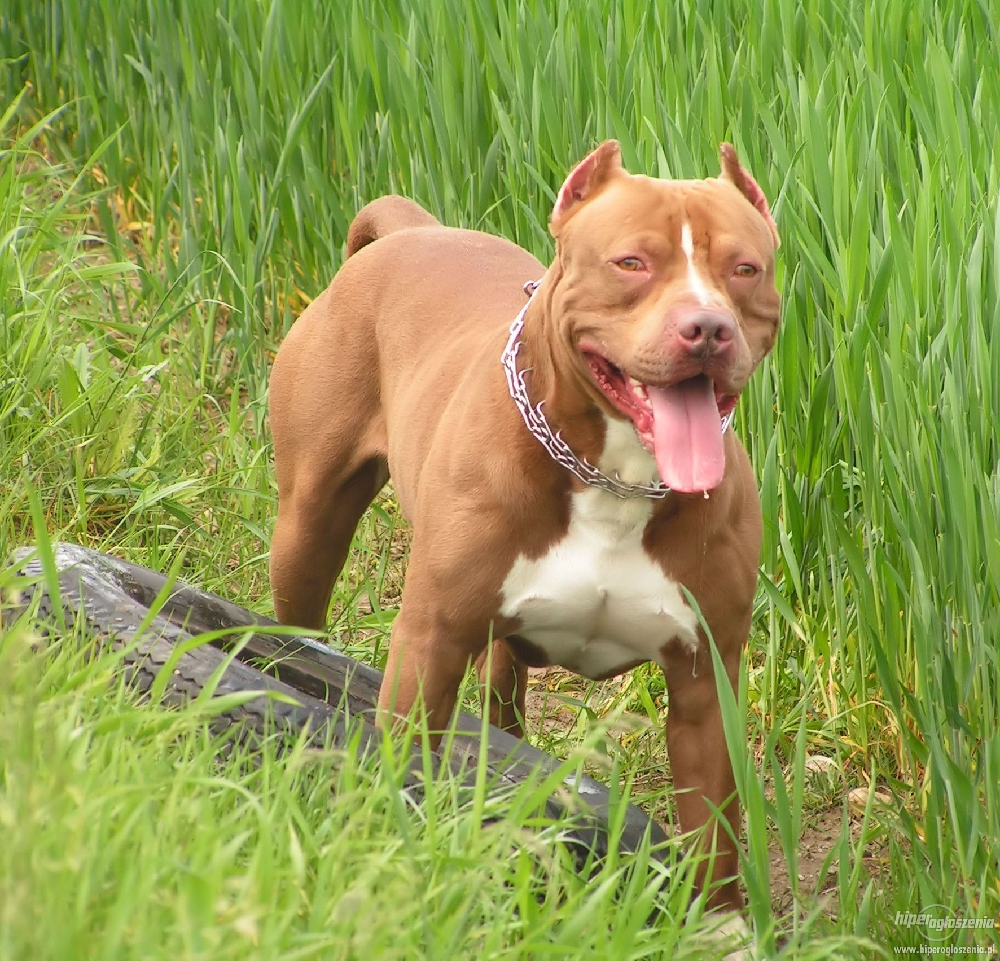
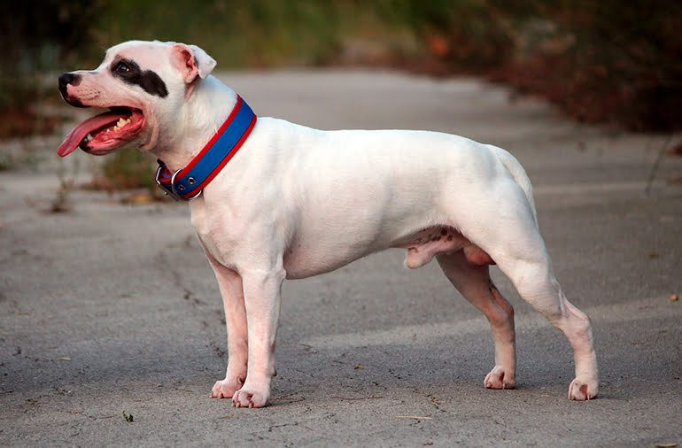
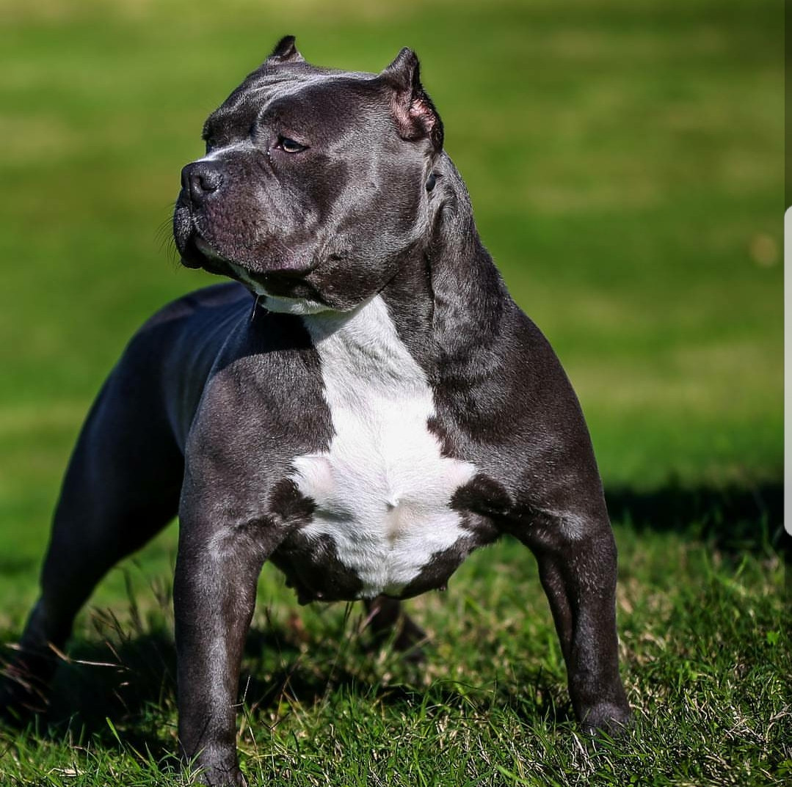
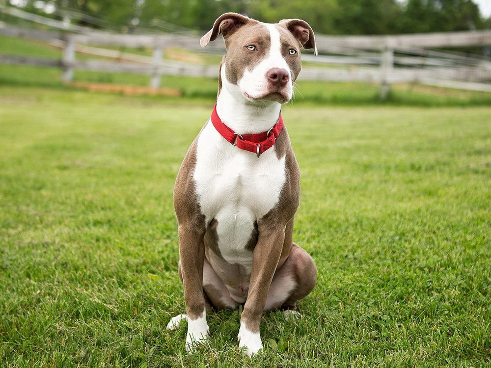

Bem-vindo ao mundo dos Pitbulls
Descubra tudo sobre as raças de pitbull, suas características únicas e muito mais!
Explore as raças:

American Pit Bull Terrier
Sabia que essa raça é conhecida por sua energia e lealdade? Eles são incríveis para esportes como agility!
 Staffordshire Bull TerrierO Staffy é apelidado de "cachorro babá" por sua paciência e carinho com crianças.
 American BullyCom uma aparência musculosa e intimidadora, o American Bully é extremamente dócil e adora carinho.
 American Staffordshire TerrierConhecidos como Amstaff, são extremamente inteligentes e adoram agradar seus donos.